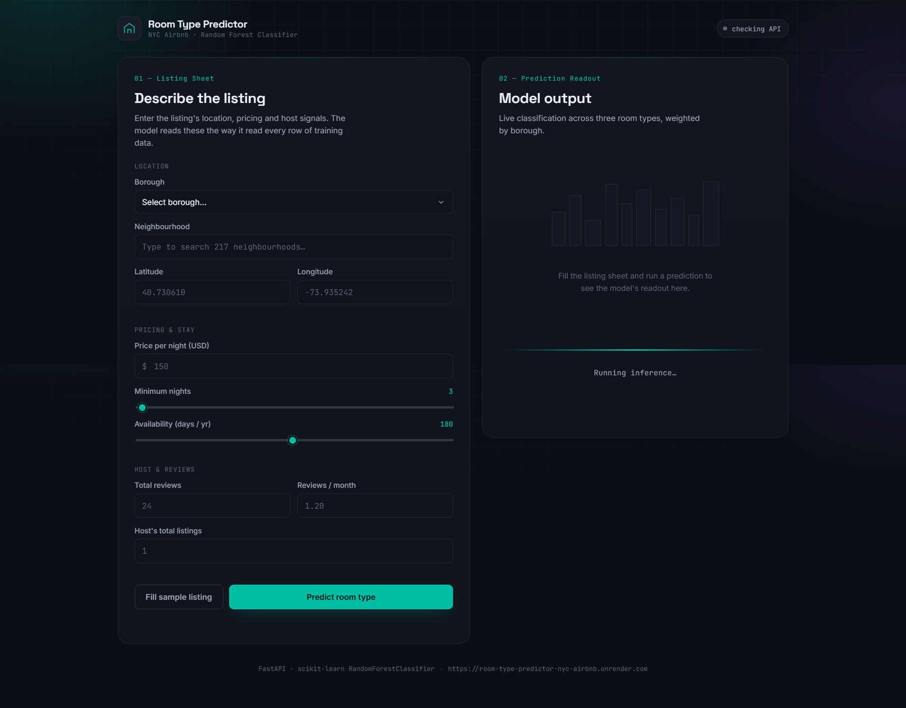
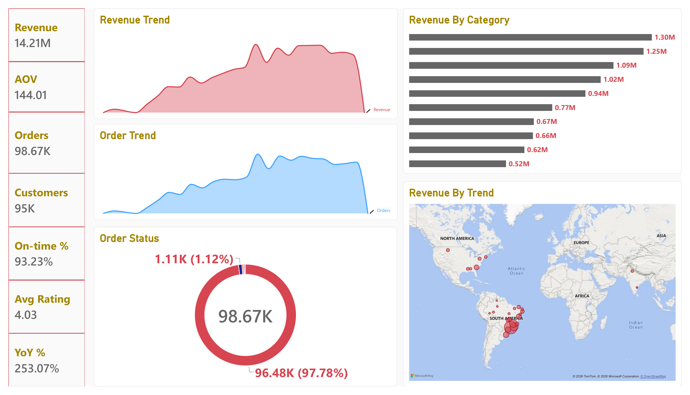

Building end-to-end machine learning and data solutions — from data preparation and model evaluation to SQL analytics, interactive BI, APIs, and deployment.
Classification • Model Evaluation • Scikit-Learn
Build, compare and evaluate ML models using structured preprocessing and validation.
Python • Pandas • SQL • EDA
Transform raw data into insights through cleaning, analysis and exploratory workflows.
Power BI • DAX • PostgreSQL
Build interactive dashboards, KPIs and analytical views for business reporting.
FastAPI • Render • Git • GitHub
Take projects from development through API integration, deployment and version control.
Engineering Philosophy
I am an aspiring Machine Learning Engineer and Data Scientist focused on building end-to-end ML pipelines, SQL analytics layers, and interactive BI dashboards. My work spans data preparation, model evaluation, API development, deployment, and data modeling.
My objective is to build and deploy practical machine learning and data solutions — working across model development, API engineering, SQL analytics, and BI to deliver usable, end-to-end data products.
What I Work With
My engineering capabilities span machine learning, SQL data modeling, business intelligence, and application deployment — developed through end-to-end personal projects and industry internship experience.
Built end-to-end classification pipelines comparing multiple models — selecting Random Forest through empirical evaluation with Scikit-Learn.
Transforming raw datasets into structured analytical and machine learning workflows through preprocessing, feature engineering, SQL modeling and exploratory analysis.
Built a 9-page Power BI dashboard with 26 DAX measures connected via DirectQuery to a PostgreSQL BI semantic layer.
Built deployable ML applications using FastAPI and Render, with additional experience using Streamlit and Flask for application interfaces.
What I've Built


My Journey
Solitaire Infosys Pvt. Ltd. | Mohali, Punjab
Data Annotation | Remote (California, UK & EU)
Outlier | Remote (USA)
Verified
Recognition
Key milestones reflecting technical growth, engineering experience, industry exposure, and professional recognition in Machine Learning and Data Science.
Background
Gulzar Group of Institutes, PTU | Ludhiana, Punjab
CBSE Board
CBSE Board
Open to internship and entry-level opportunities in Machine Learning and Data Science.
▸ ML Engineer · Data Scientist · AI/NLP Roles